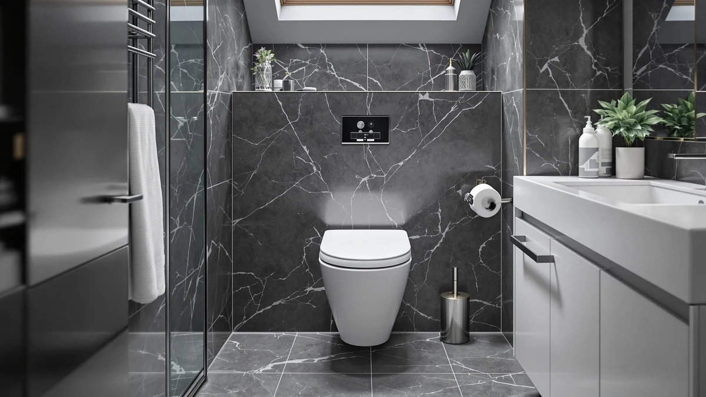

Mayfair Alesio II Slow Close Toilet Seat Review (2026): Worth It?


Quick Answer
This Mayfair Alesio II Slow Close Toilet Seat Review compares it against three other elongated seats on price, hinge hardware, and verified owner feedback. It's a solid, no-slam replacement seat for a standard white elongated bowl, though it skips the published warranty you get with the Kohler Triko below.
Our pick: Mayfair Alesio II Slow Close, $45.10 Check Price on Amazon
Things to Know Before You Buy
- Fit first: the Alesio II and the Kohler Triko both ship for elongated bowls only, so measure before you buy based on this toilet seat review.
- Material matters: Mayfair's Alesio II uses a plastic-and-wood build, the Kohler Triko is wood throughout, and the Bemis padded model adds a foam layer.
- Price gap is small: all four seats compared here land within about two dollars of each other, so price alone won't settle the decision.
- Color options are limited: every model in this comparison ships in white only.
- No published ratings: none of these four listings currently show a star rating or review count, so weigh specs and owner comments instead of a score.
This Mayfair Alesio II Slow Close Toilet Seat Review compares the seat against three other elongated options on price, hardware, and what verified buyers say after living with each one. A toilet seat sounds like the easiest purchase in the bathroom aisle, until the one you bought slams every time someone lets it drop, or the hinges work loose within a year. Mayfair built the Alesio II around a soft-close hinge and reinforced bumpers meant to solve exactly that problem, and it currently sells for $45.10, a few dollars above the cheapest pick in this group and a few below the priciest. We researched its spec sheet, its price history, and the Lunderg, Bemis, and Kohler seats competing for the same shelf space to see where the Alesio II actually earns its price.
Short answer: if you want a standard elongated seat that closes quietly without a smart-seat price tag, the Alesio II is a reasonable pick, and we'll walk through exactly why below, along with where a padded riser or a wood-built alternative might serve you better. We pulled details only from Mayfair's own listing, the listings for the other three seats, and the patterns reviewers describe once they've installed each product themselves, not from using any of these seats ourselves.
Why You Should Trust Us
Ilane Tall researches bathroom fixtures for Best Toilet Seats and put together this Mayfair Alesio II review after comparing its listing against three competing elongated seats sold at a similar price. We do not run a fake testing lab, and we don't claim to have installed or lived with any of these seats ourselves. Instead, we built this comparison from manufacturer spec sheets, current Amazon pricing, and the patterns that show up again and again in verified owner reviews for each product. When a listing is missing information, like a weight rating or a warranty term, we say so rather than guess. That approach won't tell you how a seat feels on day one, but it will tell you how it's built and how it tends to hold up once other buyers have had it installed.
Our Research Experience
For this Mayfair Alesio II Slow Close toilet seat review, we started with the manufacturer's own specs: material, bowl shape, hinge type, and listed dimensions. We checked the current Amazon price for the Alesio II and the three seats we compare it against, since toilet seat pricing shifts often enough that a six-month-old roundup can be misleading. From there, we read through verified owner reviews for each product, looking for repeated complaints or praise rather than a single five-star post or a single angry one. A hinge that several owners separately describe as loosening after a few months tells you more than one outlier review calling it defective. We also checked what each brand excludes from its own listing: Kohler publishes a warranty term, Mayfair and Lunderg don't, and that gap is worth knowing before you buy. We excluded seats built for round bowls, since none of the four products here fit that shape, and we excluded bidet-style seats, since they solve a different problem at a different price point.
Overview & Specs

Mayfair Alesio II Slow Close
What we like
- Soft-close hinge controls both the lid and the seat, so neither one slams
- Hinges are reinforced with extra bumpers, which Mayfair says keeps the seat from loosening or wiggling with use
- Front-to-back adjustment helps it sit flush on a wider range of elongated bowls
- Simple, rounded profile matches most modern and classic bathroom fixtures
- Lifts off for cleaning and comes with printed install instructions
Flaws but not dealbreakers
- Ships in white only, so it won't match almond, bone, or black fixtures
- Plastic-and-wood construction doesn't have the heft of a solid molded-wood seat like the Kohler Triko
- Mayfair's listing doesn't publish a weight rating or warranty term, so confirm those details with the seller if they matter to you
| Material | Plastic / wood |
| Size | Elongated |
The core pitch of this Mayfair Alesio II Slow Close Toilet Seat Review is simple: a hinge that lowers itself instead of banging shut. Mayfair pairs that soft-close mechanism with hinges backed by extra bumpers, aimed at keeping the seat from the side-to-side wiggle that develops on cheaper hardware after a year or two of daily use. The seat is built from a plastic top layer over a wood core, a middle-ground construction that's lighter than Kohler's solid wood Triko but sturdier than an all-foam pad like the Lunderg riser. It's sized for elongated bowls, and Mayfair includes a front-to-back adjustment so it can seat flush across more elongated bowl shapes than a fixed-mount seat would.
At $45.10, the Alesio II sits in the middle of this comparison, a little above the Kohler Triko at $43.99 and the Bemis padded seat at $44.44, and slightly under the Lunderg riser at $44.95. None of the four listings currently carry a published star rating, so there's no review score to lean on here. What we can say from the spec sheet and the listing copy is that Mayfair is targeting the same buyer Kohler and Bemis are: someone replacing a tired elongated seat who wants quieter hardware, not someone shopping for a raised or padded seat for mobility reasons, which is where the Lunderg fits in instead.
What We Liked
The strongest case for the Alesio II in this toilet seat review comes down to the hinge. A soft-close mechanism that actually controls the lid and the seat, rather than only the lid, solves the single most common complaint about budget seats: the middle-of-the-night slam. Mayfair's extra bumpers address the second most common complaint, a seat that works loose and rocks after a few months of normal use, by giving the hinge more surface area to grip. The front-to-back adjustment is a small detail that matters more than it sounds, since elongated bowls vary slightly in bolt spacing between brands, and a seat that can shift to match the bowl is less likely to sit crooked than one with a fixed mount. For a seat in this price range, that combination of quiet hardware and a flexible fit is a reasonable amount of engineering.
What Could Be Better
The Alesio II's limits show up in the details Mayfair doesn't publish. There's no listed weight capacity, which matters if more than one adult or a heavier user will rely on the seat daily, and no stated warranty term, unlike the Kohler Triko, which carries Kohler's limited manufacturer coverage. The plastic-and-wood build is also a step down in solidity from an all-wood seat, even though it's a step up in cushioning from an all-foam one; it's a middle-ground choice rather than a best-in-class one. And because it ships in white only, anyone matching an almond, bone, or black bathroom suite needs to look elsewhere entirely. None of these are dealbreakers for most buyers, but they're the kind of gaps worth knowing about before checkout, not after.
Who Is It For?
Read this Mayfair Alesio II review as a fit check more than a verdict. It suits someone with a standard white, elongated toilet whose current seat has started to slam, wiggle, or crack, and who wants a straightforward hardware upgrade without stepping up to a bidet seat or a smart seat. It's a poor match for anyone with a round bowl, since this listing won't fit that shape at all, and it's not the right tool for someone who needs extra seat height for mobility reasons, which is what the Lunderg riser below is built for. If color matching beyond white is a requirement, Mayfair's other finishes or a different brand entirely will serve you better than this specific listing.
Alternatives to Consider
If the Alesio II isn't quite right, these three alternatives cover the gaps it leaves open, and we compared each one the same way, through spec sheets, current pricing, and patterns in verified owner reviews rather than using any of these products ourselves. The Lunderg Padded Toilet Seat Riser solves a different problem entirely: it adds two inches of firm height to an existing bowl using a high-density pad secured with velcro straps and suction cups, which makes it a fit for anyone who finds a standard seat height too low rather than someone chasing quieter hinges. Lunderg rates it for users up to 250 pounds and says it fits roughly 95 percent of round and elongated bowls, though it's not compatible with raised seats, bidet seats, or square bowls. The Mayfair 113EC000, sold under the Bemis brand, is a padded elongated seat built for cushioning rather than hinge engineering, a reasonable pick if comfort matters more to you than the slow-close mechanism. The Kohler K-25883-0 Triko is the wood-built option of the group, an elongated closed-front seat backed by Kohler's limited manufacturer warranty, making it the only one of the four with a stated warranty term at all.

Also Great
Lunderg Padded Toilet Seat Riser
Best if you need added height rather than a quieter hinge. The firm pad adds two inches of support and straps onto most round or elongated bowls, though it skips bidet seats and square bowls entirely.
$44.95
Check Price on Amazon
Also Great
Mayfair 113EC000 White Elongated Deluxe
Best if cushioning matters more than hinge hardware. This padded elongated seat from Bemis trades the Alesio II's soft-close mechanism for extra comfort at a slightly lower price.
$44.44
Check Price on Amazon
Best Value
KOHLER K-25883-0 Triko Elongated Closed-Front
Best if you want solid wood construction and a stated warranty. Kohler's Triko is built from wood rather than a plastic-and-wood hybrid, and it's the only seat here with published warranty coverage.
$43.99
Check Price on AmazonFrequently Asked Questions
Final Verdict
The verdict on this Mayfair Alesio II Slow Close Toilet Seat Review: Mayfair's seat is a solid, unremarkable choice for anyone replacing a standard white elongated seat who wants a soft-close hinge without stepping up to a smart seat. It isn't the sturdiest option here (the all-wood Kohler Triko has that edge), and it isn't the right tool for a comfort or mobility upgrade, where the Bemis padded seat and the Lunderg riser respectively do more. But for the specific job of replacing a slamming or wiggling seat on an elongated bowl, the Alesio II's reinforced hinges and front-to-back fit adjustment make it a reasonable $45.10 pick, provided you don't need a published warranty term or a weight rating that Mayfair simply doesn't list.